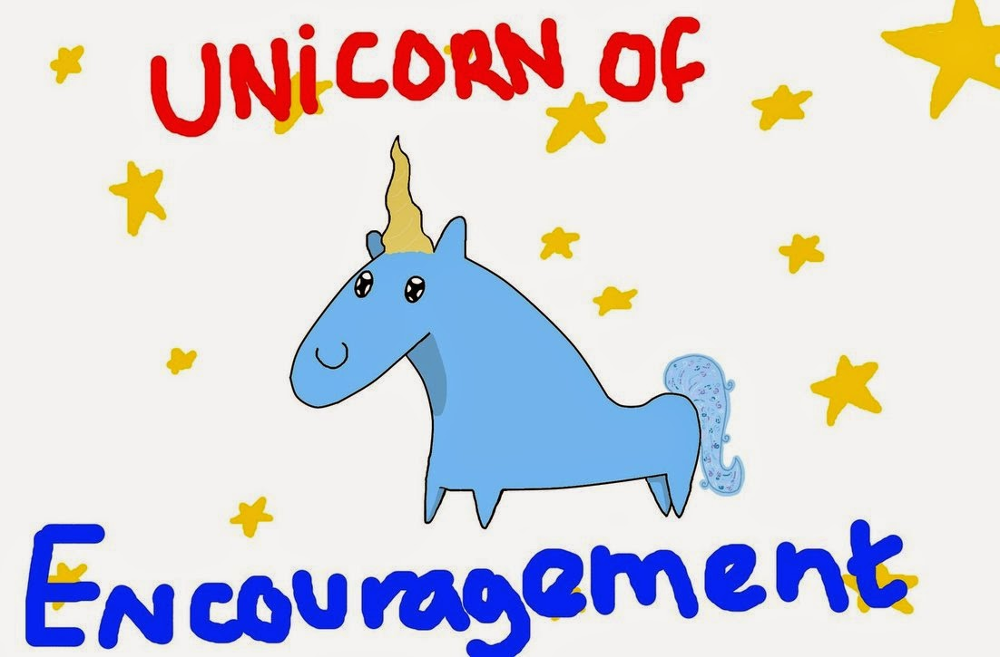

Django Quiz!!
December 13th 2016
Get into teams!

Quiz Begin!

Part 1: Multiple Choice
1. In which city in Kansas was Django conceived?
- Newton
- Lawrence
- Pittsburg
2. In what year was Django first released?
- 1999
- 2001
- 2005
3. Where was Djangocon EU this year held?
- Cardiff
- Budapest
- Bucharest
4. When does Python 2.7 stop being supported?
- 1 Jan 2018
- 2020
- April 12 2020
5. Which version of Django will drop Python 2 compatibility?
- 1.12
- 2.0
- 2.1
6. Which of these popular sites does not run on Django?
- Slideshare
- Bitbucket
- Disqus
7. What is i18n short for?
- Internationalization
- International Code 18
- Internal operation
8. Which official Django project offers websocket and asynchronous task support?
- Inputs
- Transmissions
- Channels
9. What does SQL stand for? 😉
- Standard Query Language
- Structured Query Language
- SQL’s a Query Language

End of Part 1
Part 1 Answers
1. In which city in Kansas was Django conceived?
- Newton
- Lawrence
- Pittsburg
2. In what year was Django first released?
- 1999
- 2001
- 2005
3. Where was Djangocon EU this year held?
- Cardiff
- Budapest
- Bucharest
4. When does Python 2.7 stop being supported?
- 1 Jan 2018
- 2020
- April 12 2020
5. Which version of Django will drop Python 2 compatibility?
- 1.12
- 2.0 (very probably)
- 2.1
6. Which of these popular sites does not run on Django?
- Slideshare
- Bitbucket
- Disqus
7. What is i18n short for?
- Internationalization
- International Code 18
- Internal operation
8. Which official Django project offers websocket and asynchronous task support?
- Inputs
- Transmissions
- Channels
9. What does SQL stand for? 😉
- Standard Query Language
- Structured Query Language
- SQL’s a Query Language
Part 2: Free answers
1. Which database servers does Django core include backends for?
One point each, but minus one for each wrong
2. Which famous person is Django named after?
Full name and profession each worth one point
3. What does ORM stand for?
4. What is the name of the current Django fellow?
5. What does Django use the SECRET_KEY setting for?
1 point for each use listed in the docs

End of Part 2
Part 2 Answers
1. Which database servers does Django core include backends for?
- PostgreSQL
- SQLite
- MySQL
- Oracle
2. Which famous person is Django named after?
- Jean "Django" Reinhardt (accept "Django Reinhardt")
- Jazz Guitarist
3. What does ORM stand for?
Object-Relational Mapping/Mapper
4. What is the name of the current Django fellow?
Tim Graham
5. What does Django use the SECRET_KEY setting for?
- Cryptographic signing
- Sessions
- Messages
- Password reset tokens
And the winner is...